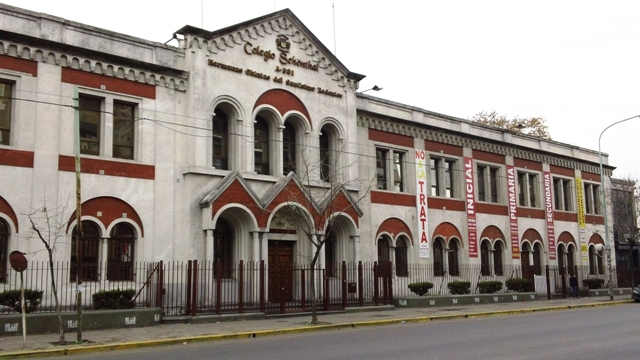
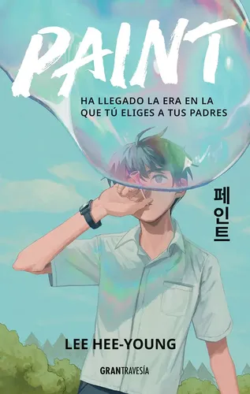
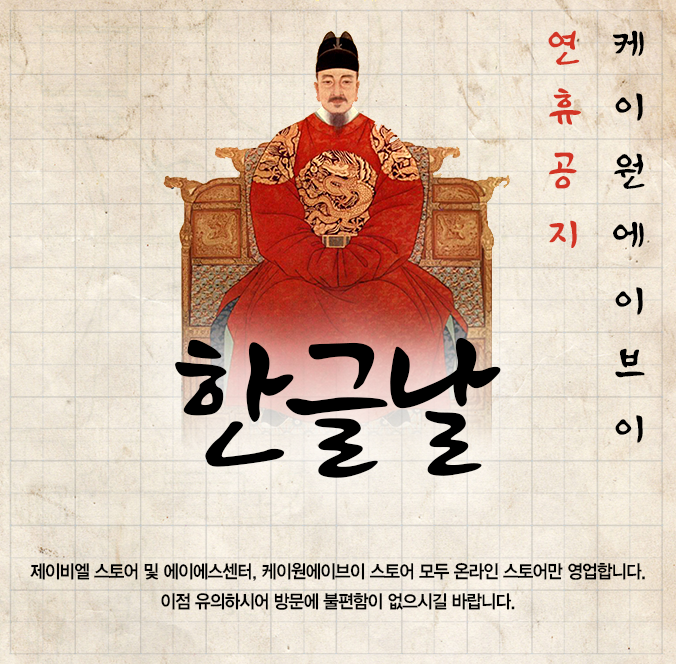

Somos una propuesta pedagógica transversal desarrollada en el Colegio Schönthal para el nivel secundario. Nuestro propósito principal es transformar la barrera lingüística en una oportunidad de intercambio educativo y social para la población estudiantil de origen coreano.
Elige tu idioma · 언어를 선택하세요

¿La infancia siempre se entendió igual? De los «adultos en pequeño» a la escolarización obligatoria: un recorrido histórico sobre cómo cambió el lugar de la niñez, a partir de Paint de Lee Hee-young.

El desarrollo del Hangul en 1443, bajo el rey Sejong, fue una revolución política, filosófica y pedagógica destinada a romper el monopolio del conocimiento en la península coreana.
Un cuento argentino, una novela coreana y una película: tres obras que miran de costado los horrores de la última dictadura argentina (1976-1983) y la masacre de Gwangju de 1980.